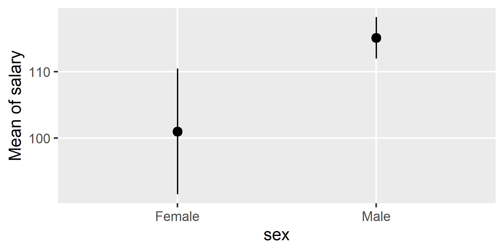
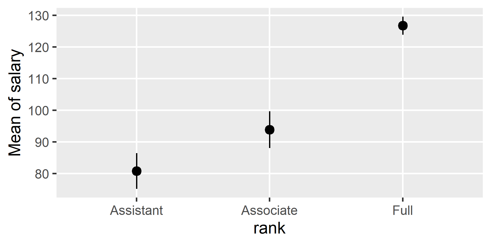

salaries <- read_csv("../../data/salaries.csv")
salaries
## # A tibble: 397 × 6
## rank discipline yrs.since.phd yrs.service sex salary
## <chr> <chr> <dbl> <dbl> <chr> <dbl>
## 1 Full Applied 19 18 Male 140.
## 2 Full Applied 20 16 Male 173.
## 3 Assistant Applied 4 3 Male 79.8
## 4 Full Applied 45 39 Male 115
## 5 Full Applied 40 41 Male 142.
## 6 Associate Applied 6 6 Male 97
## 7 Full Applied 30 23 Male 175
## 8 Full Applied 45 45 Male 148.
## 9 Full Applied 21 20 Male 119.
## 10 Full Applied 18 18 Female 129
## # ℹ 387 more rowsStatistical Methods
Dummy Codes / Means / Contrasts
Fall 2025 | Course PSYC 790
Jeffrey M. Girard | Lecture 10a

Introduction
Categorical variables
We learned regression with a single continuous predictor
Today we learn about regression with a categorical predictor
We use
factor()to tell R that a variable is categoricalOur factor puts each observation into one of \(g\) groups
- Groups must be mutually exclusive and exhaustive
- No observation is in more than one group/category
- All observations are in a group/category
Terminology and examples
- Two groups: “binary” or “dichotomous”
- e.g., \(\text{Condition}\in\{\text{Control}, \text{Treatment}\}\)
- e.g., \(\text{Gender}\in\{\text{Man}, \text{Woman}\}\)
- Three or more groups: “nominal” or “polytomous”
- e.g., \(\text{Nation}\in\{\text{UK}, \text{Germany}, \text{Spain}, \text{France}\}\)
- e.g., \(\text{Sect}\in\{\text{Catholic}, \text{Protestant}, \text{Orthodox}\}\)
- e.g., \(\text{Time}\in\{\text{Baseline}, \text{Midpoint}, \text{Endpoint}\}\)*
*Ordered categories can be modeled as nominal or ordinal.
Code variables
- To use factors as predictors, we need to quantify them
- We turn them into numerical code variables
- There are several methods called coding systems
- Coding systems may change the code and coefficients
- But they don’t change the predictions or model fit
- All coding systems turn a factor into \(g-1\) code variables
- So if we have 6 groups, we need 5 code variables
Dichotomous
Dummy Coding
Coding two categories
- Dummy coding uses a value of \(0\) or \(1\) for each code variable
- With two categories, we only need one code variable: \(C_1\)
- One category gets \(C_1=0\) and the other gets \(C_1=1\)
- The category assigned to \(0\) is called the “reference group”
Female as Reference
| Sex | C1 |
|---|---|
| Female* | 0 |
| Male | 1 |
Male as Reference
| Sex | C1 |
|---|---|
| Female | 1 |
| Male* | 0 |
Example dataset
Dummy coding by hand
- We can use the
recode()function from {tidyverse}
salaries$sex_c1 <- recode(salaries$sex, Female = 1, Male = 0)
salaries
## # A tibble: 397 × 7
## rank discipline yrs.since.phd yrs.service sex salary sex_c1
## <chr> <chr> <dbl> <dbl> <chr> <dbl> <dbl>
## 1 Full Applied 19 18 Male 140. 0
## 2 Full Applied 20 16 Male 173. 0
## 3 Assistant Applied 4 3 Male 79.8 0
## 4 Full Applied 45 39 Male 115 0
## 5 Full Applied 40 41 Male 142. 0
## 6 Associate Applied 6 6 Male 97 0
## 7 Full Applied 30 23 Male 175 0
## 8 Full Applied 45 45 Male 148. 0
## 9 Full Applied 21 20 Male 119. 0
## 10 Full Applied 18 18 Female 129 1
## # ℹ 387 more rowsRegression with a dummy code
- We can regress
salaryon the numeric dummy code \(C_1\)
\[\hat{y}_i = b_0 + b_1 C_{1i}\]
- The intercept \(b_0\) is the value of \(\hat{y}\) when \(C_1=0\)
- i.e., the reference group’s average outcome value
- The slope \(b_1\) is the change in \(\hat{y}\) when \(C_1+1\)
- i.e., the group difference in average outcome values
Regression with a dummy code
The average salary of male professors is $115,090
Female professors make $14,090 less on average
The factor shortcut (recommended)
- R will automatically generate dummy codes for factors
- It will use the first level as the reference group
- It will name the slope “factorNonref” (e.g., sexFemale)
Swapping the reference group
- To use female as the reference group, we just put it first
The average salary of female professors is $101,000
Male professors make $14,090 more on average
Parameter significance testing
- Testing is the same as with a continuous predictor
“The average salary of female professors was estimated to be 14.09 thousand US dollars lower than that of male professors, 95% CI: [–24.04, –2.13], t = –2.78, p = .006.”
Relation to Student’s t-test
fit2b <- t.test(salary ~ sex, data = salaries, var.equal = TRUE)
model_parameters(fit2b)
## Two Sample t-test
##
## Parameter | Group | sex = Female | sex = Male | Difference | 95% CI
## ----------------------------------------------------------------------------
## salary | sex | 101.00 | 115.09 | -14.09 | [-24.04, -4.13]
##
## Parameter | t(395) | p
## --------------------------
## salary | -2.78 | 0.006
##
## Alternative hypothesis: true difference in means between group Female and group Male is not equal to 0- The slope test and Student’s t-test give the same results
- The linear model (lm) “subsumes” Student’s t-test
- It also assumes equal variances in the two groups
Effect sizes
- The standardized slope is similar to Cohen’s \(d\)
“The average salary for female professors was 0.47 standard deviations lower than that of male professors, 95% CI: [–0.79, –0.14], p=.006.”
Note that \(y\) is standardized but the dummy code is left 0 or 1.
Effect sizes
- We can also use \(R^2\) or Adjusted \(R^2\) as before
“Only around 2% of the variance in professors’ salary was explained by sex,
R² = .019, 95% CI: [.002, .055], Adjusted R² = .017.”
Estimating means by hand
\[ \begin{align} \text{Model Equation: }&\hat{y}=b_0 + b_1(C_1)\\ &\hat{y} = 115.09 -14.09(C_1)\\ \\ \text{Male professors: }&\hat{y} = 115.09 -14.09(0)=115.09 \\ \text{Female professors: }&\hat{y} = 115.09 -14.09(1)=101.00 \end{align} \]
- Each professor \(i\) will have a residual \(e_i\) that pushes their salary above or below the mean for their group (i.e., sex)
\[y_i=115.09-14.09(C_1)+e_i\]
Estimating means in R
gmeans <- estimate_means(fit2, by = "sex")
gmeans
## Estimated Marginal Means
##
## sex | Mean | SE | 95% CI | t(395)
## --------------------------------------------------
## Female | 101.00 | 4.81 | [ 91.55, 110.46] | 21.00
## Male | 115.09 | 1.59 | [111.97, 118.21] | 72.50
##
## Variable predicted: salary
## Predictors modulated: sexPlotting means in R

Polytomous
Dummy Coding
Coding many categories
With three categories, we need two code variables: \([C_1, C_2]\)
The reference group will get \(0\) on all code variables
Each other group will get \(1\) on a single code variable
Alcohol as Reference
| Condition | C1 | C2 |
|---|---|---|
| Alcohol* | 0 | 0 |
| Placebo | 1 | 0 |
| Control | 0 | 1 |
Placebo as Reference
| Condition | C1 | C2 |
|---|---|---|
| Alcohol | 1 | 0 |
| Placebo* | 0 | 0 |
| Control | 0 | 1 |
Control as Reference
| Condition | C1 | C2 |
|---|---|---|
| Alcohol | 1 | 0 |
| Placebo | 0 | 1 |
| Control* | 0 | 0 |
Selecting the reference group
The reference group has implications for interpretation
- The reference group should be a useful comparison
- e.g., a control group or standard treatment
- The reference group should be well-defined
- e.g., not an “other” or “wastebasket” category
- The reference group should not be relatively small
- e.g., not a group of 10 when others have 100
Creating dummy codes by hand
- To create the dummy codes, we can use
recode()again
Regression with many dummy codes
- To use many dummy codes, we need multiple regression
- Basically, we add another predictor and another slope
\[\hat{y} = b_0 + b_1C_1 + b_2C_2\]
- The intercept \(b_0\) is the mean of the reference group
- The slope \(b_1\) is the reference vs. \(C_1=1\) group difference
- The slope \(b_2\) is the reference vs. \(C_2=1\) group difference
We will elaborate on multiple regression during the next lecture
Regression with many dummy codes
- Assistant rank averages $80,780 per year
- Associate rank averages $13,100 more than Assistant rank
- Full rank averages $46,000 more than Assistant rank
Parameter significance testing
model_parameters(fit4)
## Parameter | Coefficient | SE | 95% CI | t(394) | p
## -------------------------------------------------------------------
## (Intercept) | 80.78 | 2.89 | [75.10, 86.45] | 27.98 | < .001
## rank c1 | 13.10 | 4.13 | [ 4.98, 21.22] | 3.17 | 0.002
## rank c2 | 46.00 | 3.23 | [39.64, 52.35] | 14.24 | < .001Intercept: Is the Assistant rank salary zero?
\(C_1\) Slope: Is the Associate-Assistant group difference zero?
\(C_2\) Slope: Is the Full-Assistant group difference zero?
The factor shortcut
fit5 <- lm(salary ~ rank, data = salaries)
model_parameters(fit5)
## Parameter | Coefficient | SE | 95% CI | t(394) | p
## ------------------------------------------------------------------------
## (Intercept) | 80.78 | 2.89 | [75.10, 86.45] | 27.98 | < .001
## rank [Associate] | 13.10 | 4.13 | [ 4.98, 21.22] | 3.17 | 0.002
## rank [Full] | 46.00 | 3.23 | [39.64, 52.35] | 14.24 | < .001Note that we already set the factor up on slide 25
The parameter table includes which level each code is for
Model significance testing
- What is the overall effect of rank (à la ANOVA)?
- Do all categories have the same mean?
- We can actually give the
lm()results toaov()
The linear model (lm) subsumes ANOVA as well!
Effect sizes
model_parameters(fit5, standardize = "refit")
## Parameter | Coefficient | SE | 95% CI | t(394) | p
## ------------------------------------------------------------------------
## (Intercept) | -1.09 | 0.10 | [-1.27, -0.90] | -11.41 | < .001
## rank [Associate] | 0.43 | 0.14 | [ 0.16, 0.70] | 3.17 | 0.002
## rank [Full] | 1.52 | 0.11 | [ 1.31, 1.73] | 14.24 | < .001
r2(fit5, ci = 0.95)
## R2: 0.394 [0.316, 0.466]
## adj. R2: 0.391 [0.313, 0.463]Associate rank averages 0.43 SDs higher salary than Assistant
Full rank averages 1.52 SDs higher salary than Assistant
Rank explained 39% of the variance in salary
Estimating means by hand
\[ \begin{align} \text{Equation: }&\hat{y} = b_0 + b_1(C_1) + b_2(C_2) \\ &\hat{y} = 80.78 + 13.10(C_1) + 46.00(C_2) \\ \\ \text{Assistant: }&\hat{y} = 80.78 + 13.10(0) + 46.00(0) = 80.78 \\ \text{Associate: }&\hat{y} = 80.78 + 13.10(1) + 46.00(0) = 93.88 \\ \text{Full: } &\hat{y} = 80.78 + 13.10(0) + 46.00(1) = 126.78 \end{align} \]
Estimating means in R
gmeans <- estimate_means(fit5, by = "rank")
gmeans
## Estimated Marginal Means
##
## rank | Mean | SE | 95% CI | t(394)
## -----------------------------------------------------
## Assistant | 80.78 | 2.89 | [ 75.10, 86.45] | 27.98
## Associate | 93.88 | 2.95 | [ 88.07, 99.68] | 31.78
## Full | 126.77 | 1.45 | [123.92, 129.62] | 87.48
##
## Variable predicted: salary
## Predictors modulated: rankPlotting means in R

Contrasts
What about the difference between Associate and Full?
How can we compare non-reference groups to each other?
estimate_contrasts(fit5, contrast = "rank")
## Marginal Contrasts Analysis
##
## Level1 | Level2 | Difference | SE | 95% CI | t(394) | p
## ----------------------------------------------------------------------------
## Associate | Assistant | 13.10 | 4.13 | [ 4.98, 21.22] | 3.17 | 0.002
## Full | Assistant | 46.00 | 3.23 | [39.64, 52.35] | 14.24 | < .001
## Full | Associate | 32.90 | 3.29 | [26.43, 39.36] | 10.00 | < .001
##
## Variable predicted: salary
## Predictors contrasted: rank
## p-values are uncorrected.